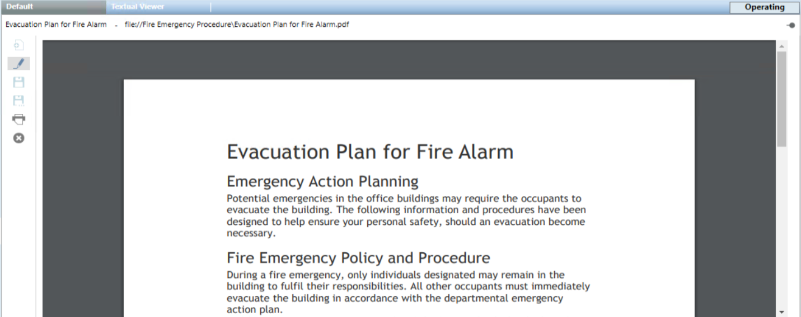

Documents Overview
Desigo CC can be configured to include a set of read-only reference documents for the operator to consult. They will typically contain instructions, procedures, or other information relevant to the operation of the facility. These documents can be files (PDF, RTF, TXT, JPG) or web links (URLs of HTML pages).

Files you can use to configure document objects in Desigo CC are included in folders located at the following path on the server station: [Installation Drive]:\[Installation Folder]\[Project Name]\documents.
New files must be copied to a new folder in this directory or to any subfolder in the same directory in the Windows file system of the computer. The files stored here are accessible only in read-only mode in the Documents application.
To modify their content, you must edit them using the appropriate separate applications (such as a text editor, a PDF creator, and so on) and save them again into this this directory or into any subfolder in it.

Microsoft .DOC and .DOCX formats are not supported.

The possibility to view and configure document objects in Desigo CC depends on your user group privileges. If appropriate application rights are not set for you, you might be able to view but not configure documents or you will not be able to access the documents application at all.